<ion-header>
  <ion-toolbar>
    <ion-buttons slot="start">
      <ion-back-button defaultHref="/tabnav/address-book" text=""></ion-back-button>
    </ion-buttons>
    <ion-title>New Contact</ion-title>
    <ion-buttons slot="end">
      <ion-icon name="qr-code-outline" ></ion-icon>
    </ion-buttons>
  </ion-toolbar>
</ion-header>

<ion-content>
  <div class="guides">
    

    <div class="preloader-scan">
      <div class="diode">
        <div class="laser"></div>
      </div>
    </div>
  </div>

  <div class="scanner-controls">
    <span  class="icon-flash" (click)="toggleLight()"></span>
    <span  class="icon-camera-toggle" (click)="toggleCamera()"></span>
  </div>
</ion-content>
